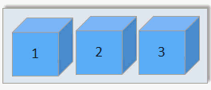

単一コンテナーとスケーラブル・コンテナーの使用の計画
• 単一コンテナーとスケーラブルなコンテナー・グループのための Bluemix 組織の管理
• プライベート Bluemix レジストリーのための名前空間のセットアップ
• 割り当て量と使用可能な Bluemix アカウント・タイプ
• 永続ストレージのセットアップ
• IBM Bluemix Container Service での単一コンテナーとスケーラブルなコンテナー・グループの作成
• Bluemix GUI、CLI、または REST API
• IBM パブリック・イメージ、Docker Hub のイメージ、プライベート・イメージ
• プライベート・コンテナー・ネットワークの設定
• パブリック・ネットワーク設定
• Bluemix サービスの統合
• 永続データ・ストレージのオプション
• コンテナーのタイプ
• モニタリング・オプションとロギング・オプション
ユーザー・ロールについて
コンテナーは、組織の管理者とコンテナー開発者によって管理されます。
次の図は、組織のコンテナー構成例を示しています。組織管理者またはコンテナー開発者が設定できるコンポーネントが強調表示されています。

IBM Bluemix Container Service の Bluemix 組織の管理
Bluemix では、組織を使用して、チーム・メンバー間のコラボレーションを可能にしたり、プロジェクトのクラウド・リソースを簡単に論理グループ化したりできます。 どの組織にも、開発環境 (スペース) をセットアップしたり、アプリのためのコンテナーを正常に作成するために必要となるクラウド・リソースへのアクセス権をチーム・メンバーに付与したりする作業を担当する組織管理者が割り当てられます。このセットアップには、パブリック IP アドレス、データ・ストレージ、コンテナー・メモリーの割り当てが含まれます。また、組織管理者は、現在の割り当て量やクラウド・リソースの使用状況を表示したり、必要に応じてそれらを調整したりすることができます。
- ユーザーに組織における管理者ロールを付与することにより、組織管理者を割り当てます。
- ユーザーにスペースにおける開発者または監査員のロールを付与することにより、コンテナー作成者を割り当てます。
プライベート Bluemix レジストリーのための組織の名前空間の設定
IBM Bluemix Container Service のプライベート・イメージを保管および管理するには、すべての組織が、その組織用のプライベート Dockerイメージ・レジストリーを Bluemix 内にセットアップする必要があります。このプライベート・レジストリーの名前を名前空間 と呼びます。これは、Bluemix 内で固有でなければなりません。
組織の名前空間を選択する際には、以下の規則を考慮してください。
- Bluemix では、名前空間は固有でなければなりません。
- 名前空間の長さは 4 文字以上 30 文字以下です。
- 名前空間の先頭は文字または数字 (1 つ以上) でなければなりません。
- 名前空間で使用できるのは英小文字、数字、下線文字 (_) のみです。
Bluemix GUI から、以下のステップを実行します。
CLI から、IBM Bluemix Container Service にログインした後、以下のコマンドを実行します。
組織の名前空間の取得
組織の名前空間が既に設定されている場合は、Bluemix GUI または CLI から取得できます。
Bluemix GUI から、以下のステップを実行します。
CLI から、IBM Bluemix Container Service サービスにログインして、以下のコマンドを実行します。
割り当て量と Bluemix アカウント
Bluemix のどの組織も、コンテナー・メモリー、パブリック IP アドレス、ファイル共有、組織内のすべてのスペースで共有するサービスの数として、値が事前設定されています。これらの事前設定値を、割り当て量と呼びます。
Bluemix アカウント・タイプ
| アカウント・タイプ | 説明 |
|---|---|
| 無料試用 | 単一コンテナーとスケーラブル・コンテナーはありません。クラスター管理について学び、Bluemix Public の IBM Bluemix Container Service の Kubernetes にマイグレーションします。 |
| 従量制課金 | 従量制課金アカウントの契約では、使用した Bluemix リソースの分のみ支払います。 |
| サブスクリプション | サブスクリプション・アカウントの契約では、毎月最小限の使用量を守ることを誓約し、その最低料金に適用されるサブスクリプション割引を受けます。 また、最小限の使用量を超過した場合は、その超過分の料金を支払います。 |
| Bluemix Dedicated | Bluemix Dedicated では、最低 1 年間の契約が必要になります。 その期間中の月々の支払額は、希望する専用サービスと、すべての公開サービスへのアクセス権限を付与するサブスクリプション・アカウントに基づきます。 |
| Bluemix ローカル | Bluemix Local を使用するには、最低 1 年間の契約が必要になります。 その期間中の月々の支払額は、希望するローカル・サービスと、すべての公開サービスへのアクセス権限を付与するサブスクリプション・アカウントに基づきます。 |
有料アカウントのデフォルト割り当て量
| リソース | 有料アカウントの割り当て量の制限 |
|---|---|
| パブリック IP アドレス | 64 |
| コンテナー・メモリー | 64 GB 注: スペース内のすべてのコンテナーは、そのコンテナーが実行中かどうかにかかわらず、割り当て量の使用量としてカウントされます。
メモリーの空き容量を増やすためには、未使用のコンテナーを削除する必要があります。
|
| ファイル共有 | 10 個のファイル共有 |
| コンテナーおよびコンテナー・グループ | 数は無制限 注: コンテナーおよびコンテナー・グループのサイズでは、コンテナー・メモリーの制限が考慮されますが、特定のコンテナー数に制限されることはありません。
|
| イメージ | 25 注: IBM イメージは、プライベート Bluemix レジストリーのイメージ制限のカウントには含まれません。
|
| スペース | 数は無制限 注: どのスペースも、少なくとも 2 つのパブリック IP アドレスと、2 GB のコンテナー・メモリー (新しいスペースにログインし、IBM
Bluemix Container Service で使用しようとするときに自動的に割り振られる) が必要です。これらのリソースは割り当て量に組み込まれますが、特定のスペース数に制限されることはありません。
|
スペースに割り振られる割り当て量
- 「組織の管理」のアカウントの詳細から、組織を選択します。
- 割り当て量セクションに、コンテナーの詳細が表示されます。
- 「割り当て量」テーブルで、「編集」ボタンをクリックして、スペースごとに割り振られた割り当て量を変更します。
- 「保存」ボタンをクリックして、変更を保存します。
割り当て量を最大限使用するためのヒント
- 使用していないコンテナーを削除して、それらのコンテナーの構成が割り当て量に計上されないようにしてください。詳しくは、単一コンテナーの削除、コンテナー・グループの削除、およびマルチコンテナー・アプリの削除を参照してください。
- コンテナーをインターネットからアクセス可能にしてはならない場合は、パブリック IP アドレスをコンテナーにバインドしないでください。
- パブリック IP アドレスの使用数を減らすには、単一コンテナーの代わりにコンテナー・グループを使用することを検討してください。 コンテナー・グループは、IP アドレスの割り当て量に左右されないパブリック・アクセス用の経路を使用します。詳細については、Bluemix GUI から長期サービスをコンテナー・グループとして実行するを参照してください。
永続データ・ストレージ
組織管理者は、スペースのストレージのニーズに合わせて、特定のストレージ・サイズおよび IOPS を指定してファイル共有を作成することができます。 ファイル共有をプロビジョンするときには、サイズは 20 GB から 12 TB まで、1 GB あたりの IOPS は、0.25、2 または 4 を指定できます。ファイル共有サイズと IOPS 数値の比が、コンテナー・ボリュームとの間のデータの読み取り/書き込み速度に影響を与えます。
Bluemix での IBM Bluemix Container Service を使用したコンテナーの作成
Bluemix の IBM Bluemix Container Service でアプリを実行するコンテナーを作成するには、組織スペースに対する開発者権限が付与されている必要があります。アプリの開発者にとって、コンテナーのコンポーネントどうしの関係や、アプリの機能要件や非機能要件を満たすためにコンテナーの構成を変更する方法を知っておくことは重要です。
Bluemix GUI、コマンド・ライン、および REST API
IBM Bluemix Container Service を操作するときには、Bluemix GUI を利用するか、コマンド・ライン・インターフェース (CLI) をインストールするか、REST API に対して HTTP 要求を送信して IBM Bluemix Container Service にアクセスできます。
IBM Bluemix Container Service のタスクの大部分は、Bluemix GUI と CLI のどちらでも実行できます。しかし、Bluemix GUI または CLI のどちらかでしか実行できないタスクもあります。そのため、両方を使用してコンテナーを管理できるように準備しておいてください。
Bluemix GUI と CLI のどちらも使用しない場合は、HTTP 要求を直接 IBM Bluemix Container Service API サーバーに送信することにより、REST を使用してコンテナーを管理できます。
以下の表に、Bluemix GUI、IBM Bluemix Container Service CLI、または REST API のいずれかを必要とするすべてのコンテナー関連タスクを示します。 ここにリストされていないタスクは、すべての方法で実行できます。| タスク | GUI | CLI | API |
|---|---|---|---|
| イメージの脆弱性を確認する |  |
 |
|
| レジストリーにイメージをプッシュする | |
|
|
| レジストリーからイメージをプルする | |
|
|
| Docker Hub からイメージをコピーする | |
|
|
| 割り当て分の割り振りを変更する | |
|
|
| 組織とスペースの固有の割り当て分を取得する | |
|
|
| 詳細なログ情報を表示する | |
|
|
| 追加のログを指定する | |
|
|
| ログをカスタマイズする | |
|
|
| 実行中のコンテナーにログインする | |
|
|
| Docker Compose を使用する | |
|
|
| スペースのボリュームをリストする | |
|
|
| ファイルをボリュームに書き込む | |
|
|
| ボリュームを削除する | |
|
|
| システム・メッセージを取得する | |
|
|
CLI のインストール
CLI からコンテナーを管理するためには、IBM Bluemix Container Service CLI をインストールして構成します。
REST API によるコンテナーの管理
IBM Bluemix Container Service API を使用すれば、単一コンテナーやコンテナー・グループの操作に REST を使用できます。
IBM パブリック・イメージ、Docker Hub のイメージ、プライベート・イメージ
コンテナー・イメージとは、作成するすべてのコンテナーの基本です。 イメージは、Dockerfile (イメージをビルドするための指示が入ったファイル) と、ビルド成果物 (アプリ、アプリの構成、およびその従属関係) から作成されます。 コンテナー・イメージは、実行可能ファイル (.exe または .bin) と見なすことができます。実行可能アプリ・ファイルを実行すると、すぐにアプリのインスタンスが作成されます。 コンテナーを実行するときには、イメージからコンテナー・インスタンスを作成します。コンテナー・イメージは、プライベート Bluemix レジストリーに保管され、CLI からのみ追加できます。コンテナー・イメージからコンテナーを作成するためには、その前に、使用したいコンテナー・イメージをすべてレジストリーに置いておく必要があります。
- IBM パブリック・イメージ
- 手始めに、IBM Liberty や IBM Node のイメージなどの、IBM Bluemix Container Service に用意されている IBM パブリック・イメージのいずれかを使用して、IBM Bluemix Container Service の機能をテストします。 そして、それらのイメージのいずれかを親イメージとして使用し、Dockerfile を変更し、独自のアプリ・コードを使用して、親イメージの上に独自のイメージをビルドできます。
- Docker Hub のイメージ
- イメージを Docker Hub から直接プライベート Bluemix レジストリーにコピーするか、またはイメージを Docker Hub からプルし、ローカルで変更を加えた後、レジストリー内で直接ビルドします。
- 独自イメージの作成
- ローカル Docker 環境で既に使用しているコンテナー・イメージがある場合は、それらを IBM Bluemix Container Service で使用するために、それらをプライベート Bluemix レジストリーにプッシュすることができます。また、独自の Dockerfile をローカルに作成し、ビルドし、テストした後、プライベート・イメージ・レジストリーにプッシュすることもできます。
プライベート・イメージ・レジストリー内のイメージの表示
Bluemix GUI または CLI を使用して、プライベート Bluemix イメージ・レジストリー内にある使用可能なすべてのコンテナー・イメージを表示できます。
- Bluemix GUI で、カタログを選択してから「コンテナー」を選択します。 IBM 提供のイメージと、ユーザーが Bluemix プライベート・レジストリーにプッシュしたイメージが表示されます。
- CLI から、bx ic images を実行します。
イメージ脆弱性の検討
プライベート Bluemix レジストリーにイメージを追加すると、Vulnerability Advisor によって自動的にイメージがスキャンされ、組織管理者が設定した標準ポリシーおよび Ubuntu の既知の問題のデータベースとの照合が行われます。Vulnerability Advisor は、インベントリー・パッケージ、構成、開かれているポート、および Docker メタデータを検査します。 スキャンが完了したら、イメージをコンテナー内で使用する前に、潜在的な脆弱性のリストを検討し、必要に応じて対処できます。組織管理者が設定したポリシーに応じて、そのイメージからのコンテナーのデプロイメントを禁止したり、ユーザーに警告を表示したりできます。
- イメージの脆弱性をリストする場合は、イメージ・レポートの検討を参照してください。
- 組織内でカスタム・ポリシーをセットアップする場合は、組織ポリシーの検討を参照してください。
コンテナーのシャットダウンを回避するための Dockerfile のヒント
IBM Bluemix Container Service には、ユーザーのためにコンテナーを安全に保ち、クラウド・リソースを管理する多くの機能が備わっています。 アプリによっては、Bluemix でローカル・コンテナーを正常に実行するために、Dockerfile に構成を追加する必要がある場合があります。
- ネットワーク遅延のための準備
- コンテナーが開始されると、IBM Bluemix Container Service はプライベート・コンテナー・ネットワークをセットアップし、コンテナーにプライベート IP アドレスを割り当てます。 この処理には数秒かかる場合があります。 開始時にアクティブなネットワーク接続が必要なアプリの場合は、Dockerfile にスリープ・コマンドを追加して、IBM Bluemix Container Service ネットワーキングが先に完了するようにしてください。
- 長期実行コマンドの使用
- コンテナーを稼働中の状態に保つには、少なくとも 1 つの長期実行プロセスをコンテナー・イメージに含める必要があります。 例えば、echo "Hello world" は短期実行プロセスです。 イメージの中に他のコマンドが指定されていない場合、コンテナーは、このコマンドの実行後にシャットダウンされます。 echo "Hello world" コマンドを長期実行プロセスに変換するには、例えば、何度もループ実行したり、echo コマンドをアプリ内の別の長期実行プロセスの中に含めたりします。
IBM Bluemix Container Service のプライベート・コンテナー・ネットワーク設定
コンテナーのプライベート・ネットワークによって、1 つのスペースの中で実行される複数の単一コンテナーやコンテナー・グループに対して個々に安全な環境が作成されます。 同じプライベート・ネットワークに接続された各コンテナーは、プライベート IP アドレスを使用して、そのプライベート・ネットワーク内の他のコンテナーとの間でデータを送受信できます。パブリック・ポートと、単一コンテナー用のパブリック IP アドレスまたはコンテナー・グループ用のパブリック経路のいずれかがバインドされるまで、コンテナーをパブリックに使用することはできません。
- IBM Bluemix Container Service のデフォルトのプライベート・ネットワーク設定
- Bluemix では、すべてのスペースに、 デフォルトの IBM Bluemix Container Service ネットワーク設定を適用したコンテナー・プライベート・ネットワークが既に用意されています。 この設定には、プライベート IP アドレスを使用してコンテナーおよびコンテナー・グループ間でのプライベート・ネットワーク通信を可能にするデフォルトのプライベート・ネットワーク・セキュリティー・グループの自動設定も含まれます。コンテナーまたはコンテナー・グループをスペースに作成すると、デフォルトの IBM Bluemix Container Service プライベート・ネットワークに自動的に接続され、サブネット 172.31.0.0/16 からプライベート IP アドレスが割り当てられます。プライベート IP アドレスが割り当てられると、同じネットワーク内のすべてのコンテナーが単一のコンテナーのプライベート IP アドレスを使用して、またはコンテナー・グループを使用している場合はグループのロード・バランサーのプライベート IP アドレスを使用して、すべてのコンテナー・ポートでセキュアに通信できるようになります。コンテナー・ポートをホスト・ポートにマッピングする必要はありません。
- コンテナーを社内データセンターに接続するための仮想プライベート・ネットワーク
- Bluemix のプライベート・コンテナー・ネットワーク内の単一コンテナーとコンテナー・グループを、
企業のデータ・センターにセキュアに接続できます。
IBM
VPN は、業界標準の Internet Protocol Security (IPsec) プロトコル・スイートに基づき、インターネット上にセキュアなエンドツーエンドの通信チャネルを確立します。
IPsec プロトコルは、VPN エンドポイント間で交換されるパッケージを暗号化して、ネットワーク・レベルのピア認証、データ保全性、およびデータ機密性を提供します。
Bluemix 内のコンテナーと企業のデータ・センターの間にセキュアな接続をセットアップするためには、お客様のオンプレミスのデータ・センターに IPsec VPN ゲートウェイまたは SoftLayer サーバーを設置する必要があります。
IBM
VPN サービスを使用して、VPN ゲートウェイを 1 スペースにつき 1 つ構成し、異なる宛先への接続を最大で 16 個定義することができます。
Bluemix のコンテナーへのセキュア VPN 接続をセットアップする場合は、IBM VPNを参照してください。
コンテナーの開始時にネットワーク遅延を操作するためのヒント
コンテナーが開始されると、IBM Bluemix Container Service はプライベート・コンテナー・ネットワークをセットアップし、コンテナー・ポートを公開し、コンテナーにプライベート IP アドレスを割り当てます。 この処理には数秒かかる場合があります。 アプリがその開始時にアクティブなネットワーク接続を必要とする場合に、コンテナーのプライベート・ネットワークがまだセットアップされていない可能性があり、アプリが異常終了する原因になることがあります。 アプリが開始される前に IBM Bluemix Container Service ネットワーキングが完了するように、以下のいずれかの解決方法を実施してネットワーク遅延を操作することを検討してください。
- コンテナー開始時に実行される Dockerfile に sleep コマンドを追加します。
次のサンプル Dockerfile では、コンテナーはアプリが開始されるまで 60 秒待機します。
FROM sdelements/lets-chat:latest CMD (sleep 60; npm start) - アプリ・コードを調整してアクティブなネットワーク接続を検査します。 例えばアプリ開始前にパブリック IP アドレスに ping します。 その IP アドレスに ping できない場合は、数秒スリープしてから再試行します。 IP アドレスを解決できたらアプリを開始します。
パブリック・ネットワーク設定の決定
デフォルトでは、IBM Bluemix Container Service 内のあらゆる単一コンテナーおよびコンテナー・グループがプライベート・ネットワークから使用可能です。 しかし、アプリをインターネットからアクセスできるようにしたり、組織の他のスペースのコンテナーにアクセスしたりしたい場合があります。 そのような場合、コンテナーを公開する必要があります。 選択するコンテナーのタイプに応じて、コンテナーを公開するためのさまざまな方法があります。
単一コンテナーと Docker Compose のパブリック・ネットワーク設定
スペース内に作成するすべての単一コンテナーには、プライベート IP アドレスが割り当てられます。この IP アドレスは、プライベート・ネットワークからコンテナーにアクセスするときにしか使用できません。プライベート・ネットワーク通信は、パブリック・ネットワークとの間のネットワーク・トラフィックを一切許可しないデフォルトのプライベート・ネットワーク・セキュリティー・グループによって保護されています。 アプリをパブリック・ネットワークから利用可能にするには、パブリック・ポートを公開し、パブリック IP アドレスをコンテナーにバインドする必要があります。
スペースをコンテナーにバインドするには、パブリック IP アドレスを要求する必要があります。パブリック IP アドレスを要求すると、パブリック IP アドレス・プールからランダムに IP アドレスがスペースに割り振られます。 スペースに割り振られた IP アドレスは変更されません。 パブリック IP アドレスをコンテナーにバインドするには、bx ic run コマンドで -p オプションを使用して、HTTP ポートを公開する必要もあります。 ポートを公開すると、公開したポートでのみパブリック・データを送受信できるパブリック・ネットワーク・セキュリティー・グループがコンテナー用に作成されます。 その他のすべてのパブリック・ポートは閉じられるため、それらのポートを使用してインターネットからアプリにアクセスすることはできません。
スペースで使用可能なパブリック IP アドレスの数は、組織の割り当て量に応じて異なります。
bx ic ips- スペースで使用可能なパブリック IP アドレスがない場合
- CLI 出力:
IP Address Container ID - 対応方法: 新しいパブリック IP アドレスを要求し、コンテナーにバインドします。
bx ic ip-requestbx ic ip-bind <IP_ADDRESS> <CONTAINER>
- CLI 出力:
- スペース内でパブリック IP アドレスが使用可能で、コンテナーにバインドされていない場合
- CLI 出力:
IP Address Container ID 192.0.2.56 - 対応方法: パブリック IP アドレスをコンテナーにバインドします。
bx ic ip-bind <IP_ADDRESS> <CONTAINER>
- CLI 出力:
- スペース内でパブリック IP アドレスが使用可能だが、コンテナーに既にバインドされている場合
- CLI 出力:
IP Address Container ID 192.0.2.56 d7b4a167-8e51-4b16-b591-1a17cb7ee41f - 対応方法:
- 既にバインドされている IP アドレスをコンテナーからアンバインドし、新しいコンテナーにバインドします。
bx ic ip-unbind <IP_ADDRESS> <CONTAINER>bx ic ip-bind <IP_ADDRESS> <CONTAINER> - 新しいパブリック IP アドレスを要求し、コンテナーにバインドします。
bx ic ip-requestbx ic ip-bind <IP_ADDRESS> <CONTAINER>
- 既にバインドされている IP アドレスをコンテナーからアンバインドし、新しいコンテナーにバインドします。
- CLI 出力:
コンテナー・グループのパブリック・ネットワーク設定
インターネットからコンテナー・グループにアクセスできるようにするには、ポートを公開し、パブリック経路またはパブリック IP アドレスをそのコンテナー・グループにバインドする必要があります。
- デフォルトのドメインを使用したパブリック経路
- パブリック経路は、ホストとドメイン名から構成され、コンテナー・グループにアクセスするために Web ブラウザーに入力する完全なパブリック URL を構成します。
どの経路も、Bluemix 内で固有でなければなりません。
コンテナー作成時に、mycontainerhost など、経路のためのホスト名を選択できます。 デフォルトのシステム・ドメインは AppDomainName であり、SSL 証明書が既に用意されているため、追加の構成を行わなくてもコンテナー・グループに HTTPS を使用してアクセスできます。
例: https://mycontainerhost.AppDomainName
注: パブリック経路を使用するには、コンテナー・グループの作成時にグループの HTTP ポートを公開する必要があります。HTTP 以外のポートはパブリックに公開できません。1 つのコンテナー・グループで公開できるパブリック・ポートは 1 つのみです。 1 つのコンテナー・グループで複数のパブリック・ポートはサポートされません。 - カスタムのドメインを使用したパブリック経路
- デフォルト・ドメイン AppDomainName の代わりに独自のカスタム・ドメインを使用する場合は、パブリック DNS サーバーにそのカスタム・ドメインを登録し、Bluemix にカスタム・ドメインを構成してから、パブリック DNS サーバーでそのカスタム・ドメインを Bluemix システム・ドメインにマップする必要があります。
カスタム・ドメインが Bluemix システム・ドメインにマップされた後、カスタム・ドメインを求める要求は、Bluemix 内のアプリケーションにルーティングされます。カスタム・ドメインを作成する際、ドメイン名に下線 (_) を含めないでください。
カスタム・ドメインを作成する場合は、カスタム・ドメインの作成と使用を参照してください。
カスタム・ドメインのセキュリティーを確保するには、SSL 証明書をアップロードして、HTTPS でコンテナー・グループにアクセスできるようにします。
- パブリック IP アドレス
- コマンド・ラインでコンテナー・グループを作成する際に、IP アドレスをバインドすることもできます。コンテナーにはパブリック経路または浮動 IP アドレスのいずれかのみをバインドでき、両方はバインドできません。コンテナー・グループから IP アドレスを削除するには、コンテナー・グループを削除して作成し直す必要があります。
パブリック IP アドレスを使用するコンテナー・グループの作成の例:
bx ic group-create -p 9080 --ip 192.0.2.56 --name my_container_group registry.DomainName/ibmliberty
コンテナーで使用するための Bluemix サービスの統合
Bluemix には、IBM Bluemix Container Service でアプリに追加機能を組み込んだりアプリの実装やコンテナーの管理を簡単にしたりするために使用できる、さまざまなサービスが用意されています。
- Bluemix ユーザー・インターフェースから、Bluemix カタログを選択します。
- CLI から、cf marketplace コマンドを実行します。
コンテナー管理に役立つサービスについて詳しくは、単一コンテナーとスケーラブル・コンテナーとサービスの統合を参照してください。
永続データ・ストレージのオプション
アプリが作成するデータまたはアプリが実行する必要のあるファイルを保管する場所を決定します。
| データ・ストレージのオプション | 説明 | 保管可能なデータ量の制限 |
|---|---|---|
| オプション 1: 実行時にコンテナー内にデータを保管 | このオプションではアプリ・データは保存されません。 データは、実行時にのみコンテナーから利用可能です。 コンテナーを再作成すると、すべてのデータが失われます。 | コンテナーのサイズ |
| オプション 2: コンテナー・ボリューム内にデータを保管 | Docker 内にボリュームをマウントすると、そのボリュームはローカル・ファイル・システムにマウントされます。
IBM
Bluemix Container Service では、計算ホストへのアクセスが制限されるので、ホスト・ディレクトリーをコンテナーにマウントすることができません。
代わりに、組織規模のボリュームを使用して、コンテナーを再始動してもデータを保持します。ボリュームは、分離されたファイル共有上でホストされます。そこでは、安全にアプリ・データが保管され、ファイルに対するアクセスや権限が管理されます。
この分離のために、コンテナー内の非 root ユーザーにマウントされたボリュームに対する書き込み権限を付与する必要があります。 このオプションの場合は、データは保存され、コンテナーを再始動してもアクセスできます。スペース内の複数のコンテナー間でデータを共有できます。 コンテナーが削除されても、関連するボリュームは削除されません。 注: ボリュームをコンテナーにマウントするには、まず、ボリュームを作成する必要があります。Bluemix GUI によるボリュームの作成を参照してください。
|
ボリュームをホストするファイル共有のサイズ |
| オプション 3: オンプレミス・データベースにコンテナーを接続 | このオプションの場合、クラウド内のコンテナーとローカル環境の間のセキュア VPN 接続を使用して、オンプレミスの既存のデータベース内にデータを保存してアクセスできます。 | オンプレミス・データベースから使用可能なディスク・スペース |
| オプション 4: Bluemix データベース・サービスをコンテナーにバインド | このオプションの場合、クラウド内のコンテナーにリンクされたデータベース・サービスを使用して、データを保存し、アクセスすることができます。 Bluemix のデータベース・サービスのほとんどは、少量のデータ用のディスク・スペースを無料で提供しているため、機能をテストすることができます。 | 選択するデータベース・サービスおよびプラン |
Bluemix のコンテナー・ボリュームへの非 root ユーザーのアクセス権限
IBM Bluemix Container Service では、Docker Engine 用に ユーザー名前空間機能が使用可能に設定されています。ユーザー名前空間には、コンテナーの root ユーザーが他のコンテナーや計算ホストにアクセスできないように分離する効果があります。 ただし、ボリュームは、コンテナーの計算ホストの外部の NFS ファイル共有上にあります。 ボリュームはコンテナー内の root ユーザーを認識するようにセットアップされますが、ボリュームはコンテナーの外部にあるため、ユーザー名前空間を認識しません。
一部のアプリケーションでは、コンテナー内のユーザーだけが root ユーザーになります。しかし、多くのアプリケーションでは、コンテナー・マウント・パスに書き込む非 root ユーザーを指定します。ボリュームに対する書き込み権限を必要とする非 root ユーザーを指定するアプリケーションを設計する場合は、Dockerfile とエントリー・ポイント・スクリプトに、次の処理を追加する必要があります。
- 非 root ユーザーを作成する。
- そのユーザーを一時的に root グループに追加する。
- ボリューム・マウント・パスにディレクトリーを作成して、適切なユーザー権限を設定する。
詳しくは、適切な非 root 権限での Dockerfile の作成を参照してください。
コンテナー・タイプ
IBM Bluemix Container Service でコンテナーを作成する前に、必要なコンテナーのタイプを決定します。 IBM Bluemix Container Service では、さまざまなアプローチでクラウド内にコンテナーを作成できます。 どのアプローチを選択するかは、コンテナー内で実行するアプリの要件や依存関係に応じて異なります。
単一コンテナー
IBM Bluemix Container Service の単一コンテナーは、ローカル Docker 環境で作成するコンテナーと似ています。 単一コンテナーは、IBM Bluemix Container Service を手始めに使用して、IBM Cloud でのコンテナーの動作や IBM Bluemix Container Service が提供する機能を学習するための良い手段になります。簡単なアプリ・テストの実行やアプリの開発プロセスにおいて、単一コンテナーを使用することもできます。単一のコンテナーは再始動されることがあり、長期実行プログラムをホストすることは想定されていないので、高可用性が必要なアプリケーションにはコンテナー・グループを使用する必要があります。
- 大きく影響するのはイメージのサイズです。イメージが小さいほど、デプロイメントも高速になります。
- 最初に数回イメージをデプロイした後に、デプロイメントの速度は速くなります。最初は、イメージをホスト上のレジストリーにダウンロードする必要があります。それ以降のデプロイメントは速くなります。
- ネットワーキングのセットアップに数分かかる場合があります。
- 単一のコンテナーをデプロイする方が、グループのルーティング設定をする必要のあるコンテナー・グループをデプロイするよりも高速です。
- リンクされているコンテナーのデプロイメントは、接続を作成する必要があるため、他のデプロイメントほど高速でない場合があります。
Bluemix GUI で単一コンテナーを作成するには、短期実行タスクを単一コンテナーとして実行する を参照してください。
CLI で単一コンテナーを作成するには、コマンド・ライン・インターフェース (CLI) により短期実行タスクを単一コンテナーとして実行するを参照してください。
コンテナー・グループ
コンテナー・グループは、複数の単一コンテナーで構成されます。それらはすべて同じコンテナー・イメージから作成されたものであり、同じ方法で構成されています。
コンテナー・グループにはさらに、アプリを高可用性にするための無料オプションが用意されています。
- 組み込みのロード・バランシング
- コンテナー・グループ・インスタンスを複数の物理計算ノードに分散させるアンチアフィニティー
- 正常でないコンテナー・グループ・インスタンスの自動リカバリー
- CPU とメモリーの使用状況に基づいたコンテナー・グループ・インスタンスの自動スケーリング
- 同じスペース内に 2 つ目のコンテナー・グループを作成する。
- IBM Bluemix Container Service アベイラビリティー・ゾーンを使用して、複数のスペースにコンテナー・グループを分散させる。
- Bluemix 複数の地域にコンテナー・グループを分散させる。
- 大きく影響するのはイメージのサイズです。イメージが小さいほど、デプロイメントも高速になります。
- 最初に数回イメージをデプロイした後に、デプロイメントの速度は速くなります。最初は、イメージをホスト上のレジストリーにダウンロードする必要があります。それ以降のデプロイメントは速くなります。
- ネットワーキングのセットアップに数分かかる場合があります。
- 単一のコンテナーをデプロイする方が、ルーティング設定をする必要のあるコンテナー・グループをデプロイするよりも高速です。
- 経路にバインドされていないコンテナー・グループは、経路なしのコンテナー・グループより速くデプロイされます。
- アンチアフィニティーが有効になっていないコンテナー・グループは、アンチアフィニティーが有効になっているコンテナー・グループより高速です。アンチアフィニティーを有効にすると、指定されている数のホストがそれぞれイメージ・レイヤーをダウンロードする必要があります。
Bluemix GUI からコンテナー・グループを作成する場合は、Bluemix GUI からのコンテナー・グループの実行のトピックを参照してください。
CLI からコンテナー・グループを作成するには、CLI からのコンテナー・グループの実行を参照してください。
コンテナー・グループのロード・バランシング
コンテナー・グループには、着信トラフィックをグループ内の各コンテナー・インスタンスに均等に送付 (ラウンドロビン) するための組み込みのロード・バランシング機能があります。 コンテナー・グループの作成時、または既存グループにインスタンスが追加された時点では、自分で追加したインスタンスか自動リカバリー時に再作成されたインスタンスかに関係なく、ロード・バランシングが有効になっています。


- A : 3 つのインスタンスが含まれるコンテナー・グループ
- B : コンテナー・グループのロード・バランサー
- 1、2、3 : コンテナー・グループ内のインスタンス
新しいインスタンスがコンテナー・グループに追加されると、ロード・バランサーは、新しいコンテナー・インスタンスへのトラフィックの送信をいつ開始するかを、TCP ソケット接続を確立して判別します。 コンテナー・インスタンスが定義済みポートのリスニングを開始すると、ロード・バランサーにより、そのインスタンスへのトラフィックの送信が開始されます。 ロード・バランサーは、グループにプライベート IP アドレスを割り当てて、同じスペース内の他のコンテナーやサービスからそのグループにアクセスできるようにします。
このプライベート IP アドレスは個々のインスタンスではなくグループに割り当てられるため、グループにインスタンスを追加したり、自動リカバリー時にインスタンスが再作成されたりしても、プライベート IP アドレスは変更されません。 このプライベート IP アドレスを確認するには、bx ic group-inspect を実行します。
コンテナー・グループのアンチアフィニティー
コンテナー・グループを作成する際に、bx ic group-create コマンドで --anti オプションを使用して、アンチアフィニティー・フィーチャーを有効にするかどうかを選択できます。
アンチアフィニティーを有効にすると、コンテナー・インスタンスが別々の物理計算ノードに分散されるので、ハードウェア障害のためにコンテナーが異常終了する可能性が小さくなります。
CLI から --anti オプションを使用するには、IBM Bluemix Container Service プラグイン (bx ic) バージョン 0.8.934 以降をインストールしておく必要があります。大きいグループ・サイズの場合は、このオプションを使用できない可能性があります。 Bluemix のどの地域およびどの組織にも、デプロイできる計算ノードのセットには限りがあるからです。デプロイメントに失敗した場合は、グループ内のコンテナー・インスタンスの数を減らすか、--anti オプションを外してください。
コンテナー・グループの自動リカバリー
コンテナー・グループを作成する際に、bx ic group-create コマンドで --auto オプションを使用して、自動リカバリーを有効にするかどうかを選択できます。


コンテナー・グループで自動リカバリーが有効になり、そのグループが 10 分間実行すると、そのグループのロード・バランサーは HTTP 要求を介して、グループ内の各コンテナー・インスタンスの正常性に関する定期的な検査を開始します。 コンテナー・インスタンスが 100 秒以内に応答しない場合、それは非アクティブとしてマークされます。 非アクティブなコンテナー・インスタンスはグループから削除されて、自動リカバリーにより再作成されます。 自動リカバリーでは、グループ内にコンテナー・インスタンスをリカバリーする試行を 3 回行います。 3 回目の試行の後、そのグループでは、自動リカバリーによるコンテナー・インスタンスのリカバリーが 60 分間行われなくなります。 60 分後に、自動リカバリーのプロセスが再開します。
コンテナー・グループの自動スケーリング
コンテナー・グループには、アプリで使用されている CPU およびメモリーに基づいて、コンテナー・グループのインスタンスを自動スケーリングする機能があります。
コンテナー・グループ・インスタンスの自動スケーリングについての詳細は、コンテナー・グループの自動スケーリング (非推奨)を参照してください。
Docker Compose
アプリによっては、データベースとサービスとキャッシュ、というように、それぞれ固有のコンテナーで実行する必要がある複数のコンポーネントから構成されるものがあります。 すべてのコンテナーを同時に始動、リンク、シャットダウンさせるための調整作業は非常に難しいことがありますが、Docker Compose を使用してマルチコンテナー・デプロイメントを構成すれば、コマンド 1 つでそのアプリを実行できます。Docker Compose は、それぞれに固有のイメージおよび構成をベースとする単一コンテナー・インスタンスの集まりと見なすことができます。 マルチコンテナー・デプロイメントを一度構成し、Bluemix にデプロイします。
- Docker Compose デプロイメントは、調整されたデプロイメントをセットアップする必要があるため、他のデプロイメントほど高速ではない可能性があります。
- 大きく影響するのはイメージのサイズです。イメージが小さいほど、デプロイメントも高速になります。
- 最初に数回イメージをデプロイした後に、デプロイメントの速度は速くなります。最初は、イメージをホスト上のレジストリーにダウンロードする必要があります。それ以降のデプロイメントは速くなります。
- ネットワーキングのセットアップに数分かかる場合があります。
Docker Compose でマルチコンテナー・デプロイメントを構成する場合は、チュートリアル: Docker Compose と IBM Bluemix Container Service を使用してマルチコンテナー・デプロイメントを作成するを参照してください。
モニタリングとロギング
Bluemix では、コンテナーにはモニタリングとロギングが組み込まれるので、コンテナーの正常性を厳重に監視できます。
IBM Bluemix には、プラットフォーム・ベースのモニタリングとロギング機能が備わっています。 メトリックとログ・データは、クラウドやその他のソースで実行されているコンテナーなどの計算インスタンスから収集できます。 そして、分析、洞察、および実行のために、複数のソースから集約したデータを可視化することができます。
- モニタリング
- コンテナーのメトリックはコンテナー外部から収集されるので、コンテナー内部にエージェントをインストールして保守する必要はありません。コンテナー内エージェントでは、コンテナーが急速に作成されて破棄されるような、短期間だけ存在する軽量クラウド・インスタンスおよび自動スケーリング・グループに対して、 オーバーヘッドおよびセットアップ時間がかなり大きくなる可能性があります。外部からのこのデータ収集方法によって、こういった問題点がなくなり、モニタリングの負担がユーザーにかからなくなります。
- ロギング
- コンテナーのログは、メトリックと同様に、クローラーを使用してコンテナー外部からモニターおよび転送されます。そのデータは、クローラーによって Bluemix のマルチテナント Elasticsearch に送信されます。 この処理方法は他のコンテナー内エージェントによって収集されるログと似ていますが、わざわざコンテナー内部にエージェントをインストールする必要はありません。
ログとメトリックの収集方法、そしてカスタム・ダッシュボードの作成方法について詳しくは、コンテナーのモニタリングとロギングを参照してください